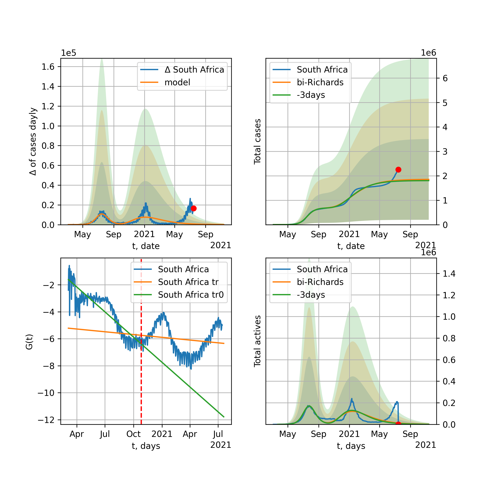

Multi-logistic model of COVID-19 dynamics
Model, code, results
Project maintained by algmaknick Hosted on GitHub Pages — Theme by mattgraham
World

World data at: 2020-07-04
+3 day model MAPE: 0.008510
model: bi-Richards
coeffs: [ 2.00202395e+07 1.21830973e+00 -5.66957647e+01 1.91582206e-02]
S.Korea scenario coeffs: [0.36242246, 2.56241634, 1.84890887, 0.13324732]
rational stdev: 0.078267
forecast at the end of period: +712 days
deltaDaycases: 11307
total cases: 30770397 ± 2408315
total death: 1441919 ± 338565
bi-Richards approximation splitting point: 50
trend coefficient of determination: 0.843585
intercept: -2.343792
slope: -0.033676
trend coefficient of determination: 0.343940
intercept: -3.917403
slope: -0.004565
European Union

European Union data at: 2020-07-04
+3 day model MAPE: 0.003558
model: bi-Richards
coeffs: [ 3.49543236e+05 3.25290604e+00 -6.63232020e+01 8.99197333e-03]
rational stdev: 0.559604
forecast at the end of period: +126 days
deltaDaycases: 126
total cases: 1427615 ± 798899
total death: 146578 ± 246076
bi-Richards approximation splitting point: 83
trend coefficient of determination: 0.943381
intercept: -1.110558
slope: -0.057394
trend coefficient of determination: 0.006222
intercept: -5.686198
slope: -0.001816
Brazil

Brazil data at: 2020-07-04
+3 day model MAPE: 0.012807
model: Richards
coeffs: [ 5.49009285e+06 3.60871576e-01 -3.66548404e+01 5.47909288e-02]
S.Korea scenario coeffs: [0.36242246, 2.56241634, 1.84890887, 0.13324732]
rational stdev: 0.100652
forecast at the end of period: +882 days
deltaDaycases: 1399
total cases: 7260511 ± 730783
total death: 296078 ± 89402
trend coefficient of determination: 0.813579
intercept: -2.513713
slope: -0.019742
Russia

Russia data at: 2020-07-04
+3 day model MAPE: 0.006682
model: Richards
coeffs: [ 8.24706309e+05 2.51975427e+00 -7.28863932e+01 1.35149897e-02]
S.Korea scenario coeffs: [0.36242246, 2.56241634, 1.84890887, 0.13324732]
rational stdev: 0.159668
forecast at the end of period: +532 days
deltaDaycases: 247
total cases: 1101633 ± 175895
total death: 16376 ± 7844
trend coefficient of determination: 0.976559
intercept: -1.549589
slope: -0.032646
USA

USA data at: 2020-07-04
+3 day model MAPE: 0.009380
model: bi-Richards
coeffs: [ 1.07875971e+07 9.89449803e-01 -1.47406229e+01 2.28215778e-02]
rational stdev: 0.279990
forecast at the end of period: +336 days
deltaDaycases: 319
total cases: 12889068 ± 3608809
total death: 580922 ± 487956
bi-Richards approximation splitting point: 90
trend coefficient of determination: 0.944897
intercept: -1.442571
slope: -0.043332
trend coefficient of determination: 0.773114
intercept: -7.240106
slope: 0.024892
Spain

Spain data at: 2020-07-03
+3 day model MAPE: 0.013195
model: bi-Richards
coeffs: [ 1.35990455e+04 3.35965168e+00 -6.05479000e+01 7.96286434e-03]
rational stdev: 0.217131
forecast at the end of period: +29 days
deltaDaycases: 118
total cases: 301014 ± 65359
total death: 28708 ± 18700
bi-Richards approximation splitting point: 98
trend coefficient of determination: 0.957936
intercept: -0.693249
slope: -0.061706
trend coefficient of determination: 0.046106
intercept: -7.754755
slope: 0.007583
Italy

Italy data at: 2020-07-04
+3 day model MAPE: 0.001068
model: Richards
coeffs: [ 2.39102375e+05 7.09705295e+00 -5.68993991e+01 8.14900707e-03]
rational stdev: 0.094217
forecast at the end of period: +14 days
deltaDaycases: 22
total cases: 238729 ± 22492
total death: 34465 ± 9741
trend coefficient of determination: 0.969051
intercept: -1.311623
slope: -0.050860
United Kingdom

United Kingdom data at: 2020-07-04
+3 day model MAPE: 0.001828
model: Richards
coeffs: [ 2.91612193e+05 4.75228996e+00 -6.99889001e+01 9.44554605e-03]
S.Korea scenario coeffs: [0.36242246, 2.56241634, 1.84890887, 0.13324732]
rational stdev: 0.154961
forecast at the end of period: +322 days
deltaDaycases: 207
total cases: 382769 ± 59314
total death: 59380 ± 27604
trend coefficient of determination: 0.977117
intercept: -1.448524
slope: -0.042948
France

France data at: 2020-07-04
+3 day model MAPE: 0.007986
model: Richards
coeffs: [1.39530079e+05 2.42709630e-01 2.04374273e+01 4.70589839e-01]
rational stdev: 0.124192
forecast at the end of period: +14 days
deltaDaycases: 55
total cases: 139067 ± 17271
total death: 24899 ± 9276
trend coefficient of determination: 0.951177
intercept: -4.003023
slope: -0.111381
Germany

Germany data at: 2020-07-04
+3 day model MAPE: 0.001889
model: bi-Richards
coeffs: [ 2.88803463e+04 4.94179092e+00 -2.83785508e+01 8.07616614e-03]
rational stdev: 0.128784
forecast at the end of period: +28 days
deltaDaycases: 156
total cases: 203826 ± 26249
total death: 9375 ± 3622
bi-Richards approximation splitting point: 94
trend coefficient of determination: 0.950725
intercept: -1.439743
slope: -0.061189
trend coefficient of determination: 0.029668
intercept: -7.433903
slope: 0.010952
Turkey

Turkey data at: 2020-07-04
+3 day model MAPE: 0.000726
model: bi-Richards
coeffs: [ 9.32641764e+04 2.62941409e+00 -1.28843970e+01 1.42543636e-02]
rational stdev: 0.194389
forecast at the end of period: +98 days
deltaDaycases: 67
total cases: 252725 ± 49127
total death: 6430 ± 3749
bi-Richards approximation splitting point: 75
trend coefficient of determination: 0.782278
intercept: -0.994439
slope: -0.058489
trend coefficient of determination: 0.078381
intercept: -5.570966
slope: 0.003635
Iran

Iran data at: 2020-07-04
+3 day model MAPE: 0.008389
model: bi-Richards
coeffs: [ 1.91256050e+05 2.23369455e+00 -3.95081372e+00 1.71649207e-02]
S.Korea scenario coeffs: [0.36242246, 2.56241634, 1.84890887, 0.13324732]
rational stdev: 0.259276
forecast at the end of period: +546 days
deltaDaycases: 50
total cases: 359110 ± 93108
total death: 17221 ± 13394
bi-Richards approximation splitting point: 75
trend coefficient of determination: 0.949230
intercept: -0.949301
slope: -0.055677
trend coefficient of determination: 0.440221
intercept: -3.725658
slope: -0.007080
Canada

Canada data at: 2020-07-04
+3 day model MAPE: 0.000503
model: Richards
coeffs: [ 1.09894804e+05 2.79775657e+00 -6.77371364e+01 1.51389093e-02]
S.Korea scenario coeffs: [0.36242246, 2.56241634, 1.84890887, 0.13324732]
rational stdev: 0.153672
forecast at the end of period: +420 days
deltaDaycases: 23
total cases: 148105 ± 22759
total death: 12198 ± 5623
trend coefficient of determination: 0.969410
intercept: -1.622238
slope: -0.043573
South Africa

South Africa data at: 2020-07-04
+3 day model MAPE: 0.020064
model: bi-Richards
coeffs: [1.73157012e+07 8.35829898e-02 1.29866640e+02 1.82363086e-01]
rational stdev: 0.286884
forecast at the end of period: +420 days
deltaDaycases: 3084
total cases: 17114901 ± 4909983
total death: 275510 ± 237117
bi-Richards approximation splitting point: 30
trend coefficient of determination: 0.558120
intercept: -1.270755
slope: -0.115964
trend coefficient of determination: 0.390133
intercept: -4.167016
slope: -0.008279
Belgium

Belgium data at: 2020-07-04
+3 day model MAPE: 0.002017
model: Richards
coeffs: [ 6.06790400e+04 7.55147455e+00 -5.07480961e+01 8.44589470e-03]
S.Korea scenario coeffs: [0.36242246, 2.56241634, 1.84890887, 0.13324732]
rational stdev: 0.336562
forecast at the end of period: +238 days
deltaDaycases: 25
total cases: 81464 ± 27417
total death: 12872 ± 12996
trend coefficient of determination: 0.839600
intercept: -1.346206
slope: -0.053873
Peru

Peru data at: 2020-07-04
+3 day model MAPE: 0.003013
model: Richards
coeffs: [3.65480488e+05 1.12378166e-01 5.05014914e+01 3.95118618e-01]
S.Korea scenario coeffs: [0.36242246, 2.56241634, 1.84890887, 0.13324732]
rational stdev: 0.304755
forecast at the end of period: +462 days
deltaDaycases: 28
total cases: 496066 ± 151178
total death: 17269 ± 15788
trend coefficient of determination: 0.927217
intercept: -4.008718
slope: -0.053128
Netherlands

Netherlands data at: 2020-07-02
+3 day model MAPE: 0.000202
model: bi-Richards
coeffs: [4.59049279e+03 4.49009658e+00 4.45518865e+01 1.91039833e-02]
rational stdev: 0.127469
forecast at the end of period: +16 days
deltaDaycases: 13
total cases: 50771 ± 6471
total death: 6166 ± 2357
bi-Richards approximation splitting point: 75
trend coefficient of determination: 0.962306
intercept: -0.870478
slope: -0.062792
trend coefficient of determination: 0.308281
intercept: -2.668255
slope: -0.035721
India

India data at: 2020-07-04
+3 day model MAPE: 0.012191
model: Richards
coeffs: [ 9.16116512e+06 3.11506317e-01 -6.18569332e+01 3.95083958e-02]
S.Korea scenario coeffs: [0.36242246, 2.56241634, 1.84890887, 0.13324732]
rational stdev: 0.372954
forecast at the end of period: +1302 days
deltaDaycases: 3108
total cases: 11619038 ± 4333365
total death: 332396 ± 371905
trend coefficient of determination: 0.712146
intercept: -1.920175
slope: -0.018269
Switzerland

Switzerland data at: 2020-07-04
+3 day model MAPE: 0.008371
model: bi-Richards
coeffs: [3.81140939e+04 5.62022623e-02 1.70348461e+02 3.92926922e+00]
rational stdev: 0.302128
forecast at the end of period: +112 days
deltaDaycases: 0
total cases: 68754 ± 20772
total death: 4196 ± 3803
bi-Richards approximation splitting point: 86
trend coefficient of determination: 0.781904
intercept: -32.541170
slope: -0.230081
trend coefficient of determination: 0.599029
intercept: -54.353473
slope: 0.064856
Ecuador

Ecuador data at: 2020-07-04
+3 day model MAPE: 0.024946
model: Richards
coeffs: [ 7.19168433e+04 1.60263206e+00 -1.16242818e+02 1.61885738e-02]
S.Korea scenario coeffs: [0.36242246, 2.56241634, 1.84890887, 0.13324732]
rational stdev: 0.152391
forecast at the end of period: +602 days
deltaDaycases: 28
total cases: 94575 ± 14412
total death: 7329 ± 3350
trend coefficient of determination: 0.166068
intercept: -2.840494
slope: -0.030827
Portugal

Portugal data at: 2020-07-04
+3 day model MAPE: 0.001146
model: bi-Richards
coeffs: [ 3.09379866e+04 1.48080372e+00 -3.90621259e+01 1.98492651e-02]
rational stdev: 0.051091
forecast at the end of period: +182 days
deltaDaycases: 3
total cases: 58995 ± 3014
total death: 2173 ± 333
bi-Richards approximation splitting point: 61
trend coefficient of determination: 0.904666
intercept: -1.211615
slope: -0.070425
trend coefficient of determination: 0.011883
intercept: -5.145793
slope: 0.001520
Saudi Arabia

Saudi Arabia data at: 2020-07-04
+3 day model MAPE: 0.003036
model: Richards
coeffs: [ 6.38371769e+05 8.47165116e-01 -1.17256379e+02 1.99565115e-02]
S.Korea scenario coeffs: [0.36242246, 2.56241634, 1.84890887, 0.13324732]
rational stdev: 0.262022
forecast at the end of period: +420 days
deltaDaycases: 50
total cases: 639135 ± 167467
total death: 5766 ± 4532
trend coefficient of determination: 0.856650
intercept: -1.959450
slope: -0.021136
Sweden

Sweden data at: 2020-07-03
+3 day model MAPE: 0.000223
model: bi-Richards
coeffs: [5.01723400e+04 3.14508636e+00 2.37624073e+01 1.49449479e-02]
rational stdev: 0.236772
forecast at the end of period: +78 days
deltaDaycases: 55
total cases: 100421 ± 23776
total death: 7621 ± 5413
bi-Richards approximation splitting point: 90
trend coefficient of determination: 0.852853
intercept: -1.342763
slope: -0.037591
trend coefficient of determination: 0.036276
intercept: -3.173019
slope: -0.010767
Pakistan

Pakistan data at: 2020-07-04
+3 day model MAPE: 0.025611
model: bi-Richards
coeffs: [2.41672379e+05 5.24214493e-02 1.08029529e+02 2.47371472e+00]
S.Korea scenario coeffs: [0.36242246, 2.56241634, 1.84890887, 0.13324732]
rational stdev: 0.383320
forecast at the end of period: +217 days
deltaDaycases: 27
total cases: 330291 ± 126607
total death: 6811 ± 7832
bi-Richards approximation splitting point: 25
trend coefficient of determination: 0.902357
intercept: -3.719846
slope: -0.584924
trend coefficient of determination: 0.976229
intercept: -17.527767
slope: -0.143044
Ireland

Ireland data at: 2020-07-04
+3 day model MAPE: 0.000709
model: Richards
coeffs: [2.53187942e+04 2.10216036e-01 2.10490451e+01 4.45604431e-01]
rational stdev: 0.162131
forecast at the end of period: +84 days
deltaDaycases: 0
total cases: 25318 ± 4104
total death: 1728 ± 840
trend coefficient of determination: 0.959677
intercept: -3.736840
slope: -0.085105
Mexico

Mexico data at: 2020-07-04
+3 day model MAPE: 0.004399
model: Richards
coeffs: [ 9.15587114e+05 4.91512126e-01 -7.42652367e+01 3.56078495e-02]
S.Korea scenario coeffs: [0.36242246, 2.56241634, 1.84890887, 0.13324732]
rational stdev: 0.198122
forecast at the end of period: +1092 days
deltaDaycases: 137
total cases: 1223502 ± 242402
total death: 147335 ± 87571
trend coefficient of determination: 0.910815
intercept: -2.096441
slope: -0.021335
Singapore

Singapore data at: 2020-07-04
+3 day model MAPE: 0.002364
model: bi-Richards
coeffs: [ 3.87496144e+04 4.85531884e+00 -2.78495858e+01 7.99992470e-03]
S.Korea scenario coeffs: [0.36242246, 2.56241634, 1.84890887, 0.13324732]
rational stdev: 0.256462
forecast at the end of period: +462 days
deltaDaycases: 21
total cases: 60355 ± 15478
total death: 35 ± 26
bi-Richards approximation splitting point: 60
trend coefficient of determination: 0.125347
intercept: -2.319293
slope: -0.021623
trend coefficient of determination: 0.620821
intercept: 0.593296
slope: -0.040791
Chile

Chile data at: 2020-07-04
+3 day model MAPE: 0.002752
model: Richards
coeffs: [3.20772319e+05 6.32878713e-02 5.53261358e+01 1.43008652e+00]
S.Korea scenario coeffs: [0.36242246, 2.56241634, 1.84890887, 0.13324732]
rational stdev: 0.103743
forecast at the end of period: +154 days
deltaDaycases: 327
total cases: 425918 ± 44185
total death: 9036 ± 2812
trend coefficient of determination: 0.985134
intercept: -15.734842
slope: -0.082026
Israel

Israel data at: 2020-07-04
+3 day model MAPE: 0.050196
model: bi-Richards
coeffs: [1.01332997e+06 4.26848250e-01 2.91269511e+01 4.58432942e-02]
rational stdev: 0.124690
forecast at the end of period: +322 days
deltaDaycases: 179
total cases: 1021237 ± 127338
total death: 11553 ± 4321
bi-Richards approximation splitting point: 70
trend coefficient of determination: 0.933183
intercept: -1.242852
slope: -0.094196
trend coefficient of determination: 0.715389
intercept: -11.952190
slope: 0.073605
Austria

Austria data at: 2020-07-04
+3 day model MAPE: 0.009175
model: bi-Richards
coeffs: [ 2.68269662e+03 9.44653443e+00 -5.43602767e+01 4.38986280e-03]
rational stdev: 1.186457
forecast at the end of period: +14 days
deltaDaycases: 14
total cases: 18056 ± 21423
total death: 700 ± 2491
bi-Richards approximation splitting point: 83
trend coefficient of determination: 0.868034
intercept: -1.557596
slope: -0.070743
trend coefficient of determination: 0.389025
intercept: -11.651277
slope: 0.053430
Belarus

Belarus data at: 2020-07-04
+3 day model MAPE: 0.003178
model: Richards
coeffs: [ 7.52360332e+04 2.50349532e+00 -7.88201585e+01 1.45603815e-02]
S.Korea scenario coeffs: [0.36242246, 2.56241634, 1.84890887, 0.13324732]
rational stdev: 0.163783
forecast at the end of period: +462 days
deltaDaycases: 28
total cases: 100142 ± 16401
total death: 661 ± 324
trend coefficient of determination: 0.963846
intercept: -1.696688
slope: -0.039679
Japan

Japan data at: 2020-07-04
+3 day model MAPE: 0.014415
model: bi-Richards
coeffs: [ 1.30650815e+04 2.99510264e+00 -7.48586328e+01 6.64056788e-03]
rational stdev: 0.677795
forecast at the end of period: +112 days
deltaDaycases: 36
total cases: 27188 ± 18428
total death: 1377 ± 2799
bi-Richards approximation splitting point: 115
trend coefficient of determination: 0.000606
intercept: -3.628381
slope: -0.001508
trend coefficient of determination: 0.490422
intercept: -9.552757
slope: 0.026498
China

China data at: 2020-07-04
+3 day model MAPE: 0.000463
model: bi-Richards
coeffs: [1.40098246e+03 7.51068407e+01 9.97663455e+00 1.34605506e-03]
rational stdev: 0.095157
forecast at the end of period: +14 days
deltaDaycases: 0
total cases: 83174 ± 7914
total death: 4613 ± 1316
bi-Richards approximation splitting point: 110
trend coefficient of determination: 0.821007
intercept: -1.966959
slope: -0.082656
trend coefficient of determination: 0.163330
intercept: -14.401052
slope: 0.035519
Qatar

Qatar data at: 2020-07-04
+3 day model MAPE: 0.001874
model: bi-Richards
coeffs: [1.08075865e+05 1.00071033e-01 5.66617267e+01 5.70135915e-01]
S.Korea scenario coeffs: [0.36242246, 2.56241634, 1.84890887, 0.13324732]
rational stdev: 0.171277
forecast at the end of period: +322 days
deltaDaycases: 19
total cases: 149435 ± 25594
total death: 185 ± 95
bi-Richards approximation splitting point: 29
trend coefficient of determination: 0.016539
intercept: -6.978453
slope: 0.011182
trend coefficient of determination: 0.982650
intercept: -5.698488
slope: -0.053155
Poland

Poland data at: 2020-07-04
+3 day model MAPE: 0.002029
model: bi-Richards
coeffs: [ 2.35736303e+04 2.62963768e+00 -1.43649356e+01 1.55902704e-02]
rational stdev: 0.111872
forecast at the end of period: +112 days
deltaDaycases: 3
total cases: 42335 ± 4736
total death: 1792 ± 601
bi-Richards approximation splitting point: 60
trend coefficient of determination: 0.716722
intercept: -1.178445
slope: -0.047928
trend coefficient of determination: 0.679322
intercept: -2.760897
slope: -0.018228
UAE

UAE data at: 2020-07-04
+3 day model MAPE: 0.005054
model: bi-Richards
coeffs: [4.64499373e+03 3.99584222e+01 1.82907034e+00 2.99607302e-03]
rational stdev: 0.116464
forecast at the end of period: +112 days
deltaDaycases: 7
total cases: 57502 ± 6696
total death: 362 ± 126
bi-Richards approximation splitting point: 95
trend coefficient of determination: 0.941365
intercept: -1.909079
slope: -0.032589
trend coefficient of determination: 0.699200
intercept: -18.841437
slope: 0.146593
Romania

Romania data at: 2020-07-04
+3 day model MAPE: 0.011706
model: bi-Richards
coeffs: [1.74205556e+04 2.01192904e-01 9.17811267e+01 3.00059780e-01]
rational stdev: 0.149560
forecast at the end of period: +56 days
deltaDaycases: 34
total cases: 38149 ± 5705
total death: 2310 ± 1036
bi-Richards approximation splitting point: 87
trend coefficient of determination: 0.938405
intercept: -2.722488
slope: -0.065618
trend coefficient of determination: 0.344972
intercept: -9.143737
slope: 0.015732
Panama

Panama data at: 2020-07-04
+3 day model MAPE: 0.002563
model: bi-Richards
coeffs: [5.66366457e+04 1.84704737e+00 9.22229716e+00 2.17699843e-02]
rational stdev: 0.211974
forecast at the end of period: +112 days
deltaDaycases: 22
total cases: 69578 ± 14748
total death: 1354 ± 861
bi-Richards approximation splitting point: 70
trend coefficient of determination: 0.874866
intercept: -1.318617
slope: -0.048847
trend coefficient of determination: 0.044325
intercept: -4.210881
slope: 0.004298
Ukraine

Ukraine data at: 2020-07-04
+3 day model MAPE: 0.003727
model: bi-Richards
coeffs: [3.53827632e+04 1.64903236e-01 8.50943636e+01 4.55923199e-01]
rational stdev: 0.160169
forecast at the end of period: +112 days
deltaDaycases: 0
total cases: 62689 ± 10040
total death: 1613 ± 775
bi-Richards approximation splitting point: 65
trend coefficient of determination: 0.859236
intercept: -3.293008
slope: -0.087664
trend coefficient of determination: 0.177217
intercept: -8.067791
slope: -0.006455
Indonesia

Indonesia data at: 2020-07-04
+3 day model MAPE: 0.009721
model: Richards
coeffs: [ 4.75123516e+05 4.16167504e-01 -1.82227870e+02 2.48597989e-02]
S.Korea scenario coeffs: [0.36242246, 2.56241634, 1.84890887, 0.13324732]
rational stdev: 0.254725
forecast at the end of period: +1470 days
deltaDaycases: 151
total cases: 595929 ± 151798
total death: 29622 ± 22636
trend coefficient of determination: 0.745543
intercept: -2.351210
slope: -0.019156
Bangladesh

Bangladesh data at: 2020-07-04
+3 day model MAPE: 0.006470
model: bi-Richards
coeffs: [3.84003839e+05 1.13869984e-01 6.68148867e+01 2.69886943e-01]
S.Korea scenario coeffs: [0.36242246, 2.56241634, 1.84890887, 0.13324732]
rational stdev: 0.412574
forecast at the end of period: +770 days
deltaDaycases: 14
total cases: 521916 ± 215329
total death: 6527 ± 8078
bi-Richards approximation splitting point: 29
trend coefficient of determination: 0.004811
intercept: -4.584129
slope: 0.018793
trend coefficient of determination: 0.899954
intercept: -2.530624
slope: -0.040488
South_Korea

South Korea data at: 2020-07-04
+3 day model MAPE: 0.001161
model: bi-Richards
coeffs: [ 7.52896906e+03 2.00211744e+00 -1.33122587e+02 8.86179043e-03]
rational stdev: 0.152158
forecast at the end of period: +112 days
deltaDaycases: 16
total cases: 16943 ± 2578
total death: 366 ± 167
bi-Richards approximation splitting point: 73
trend coefficient of determination: 0.865771
intercept: -1.342376
slope: -0.089493
trend coefficient of determination: 0.449367
intercept: -8.734668
slope: 0.025335
Moldova

Moldova data at: 2020-07-04
+3 day model MAPE: 0.017398
model: bi-Richards
coeffs: [1.61073239e+04 1.05851034e-01 9.02122222e+01 6.46390887e-01]
rational stdev: 0.181972
forecast at the end of period: +140 days
deltaDaycases: 0
total cases: 22412 ± 4078
total death: 735 ± 401
bi-Richards approximation splitting point: 60
trend coefficient of determination: 0.912798
intercept: -2.958959
slope: -0.117525
trend coefficient of determination: 0.474048
intercept: -7.829302
slope: -0.021679
Denmark

Denmark data at: 2020-07-04
+3 day model MAPE: 0.002072
model: Richards
coeffs: [ 1.22659587e+04 7.57412632e-01 -2.17374814e+01 7.08529608e-02]
rational stdev: 0.283101
forecast at the end of period: +63 days
deltaDaycases: 0
total cases: 12248 ± 3467
total death: 578 ± 490
trend coefficient of determination: 0.907675
intercept: -1.842227
slope: -0.051439
Serbia

Serbia data at: 2020-07-04
+3 day model MAPE: 0.029487
model: bi-Richards
coeffs: [1.58965571e+06 2.20270867e-01 6.48142619e+01 7.00848454e-02]
rational stdev: 0.596524
forecast at the end of period: +518 days
deltaDaycases: 60
total cases: 1597170 ± 952750
total death: 30875 ± 55253
bi-Richards approximation splitting point: 82
trend coefficient of determination: 0.919418
intercept: -1.258983
slope: -0.065244
trend coefficient of determination: 0.757768
intercept: -10.858143
slope: 0.054440
Kuwait

Kuwait data at: 2020-07-04
+3 day model MAPE: 0.003536
model: bi-Richards
coeffs: [1.24031350e+04 6.96027829e-01 4.57105357e+01 1.89664781e-01]
S.Korea scenario coeffs: [0.36242246, 2.56241634, 1.84890887, 0.13324732]
rational stdev: 0.189907
forecast at the end of period: +371 days
deltaDaycases: 0
total cases: 88843 ± 16872
total death: 657 ± 374
bi-Richards approximation splitting point: 66
trend coefficient of determination: 0.146748
intercept: -3.637561
slope: -0.012158
trend coefficient of determination: 0.761103
intercept: -2.751783
slope: -0.033429
Philippines

Philippines data at: 2020-07-04
+3 day model MAPE: 0.020518
model: bi-Richards
coeffs: [ 7.65367877e+04 1.73910246e+00 -4.38961429e+01 1.58816858e-02]
rational stdev: 0.178439
forecast at the end of period: +182 days
deltaDaycases: 13
total cases: 87550 ± 15622
total death: 2699 ± 1444
bi-Richards approximation splitting point: 60
trend coefficient of determination: 0.656093
intercept: -1.511668
slope: -0.049042
trend coefficient of determination: 0.007000
intercept: -4.111083
slope: 0.001928
Norway

Norway data at: 2020-07-04
+3 day model MAPE: 0.000765
model: bi-Richards
coeffs: [7.26329761e+02 5.39857377e+00 1.79575696e+01 9.94928547e-03]
rational stdev: 0.159207
forecast at the end of period: +14 days
deltaDaycases: 6
total cases: 9039 ± 1439
total death: 254 ± 121
bi-Richards approximation splitting point: 105
trend coefficient of determination: 0.918523
intercept: -1.135376
slope: -0.061707
trend coefficient of determination: 0.004906
intercept: -5.764342
slope: -0.009153
Czechia

Czechia data at: 2020-07-04
+3 day model MAPE: 0.019515
model: bi-Richards
coeffs: [ 4.57531271e+04 5.05336305e-01 -8.76700652e+01 2.64483695e-02]
rational stdev: 0.564466
forecast at the end of period: +322 days
deltaDaycases: 19
total cases: 52251 ± 29493
total death: 1474 ± 2496
bi-Richards approximation splitting point: 61
trend coefficient of determination: 0.439204
intercept: -1.523101
slope: -0.056327
trend coefficient of determination: 0.166684
intercept: -6.389752
slope: 0.011782
Colombia

Colombia data at: 2020-07-04
+3 day model MAPE: 0.008306
model: bi-Richards
coeffs: [ 1.66599726e+06 3.80249913e-01 -5.09489040e+01 3.70064302e-02]
S.Korea scenario coeffs: [0.36242246, 2.56241634, 1.84890887, 0.13324732]
rational stdev: 0.190459
forecast at the end of period: +1302 days
deltaDaycases: 369
total cases: 2192538 ± 417589
total death: 76224 ± 43552
bi-Richards approximation splitting point: 41
trend coefficient of determination: 0.762144
intercept: -1.106335
slope: -0.065303
trend coefficient of determination: 0.411258
intercept: -3.039789
slope: -0.006197
Australia

Australia data at: 2020-07-04
+3 day model MAPE: 0.032996
model: bi-Richards
coeffs: [ 3.31605438e+04 5.68634286e-01 -2.92121139e+02 1.38172535e-02]
rational stdev: 0.040292
forecast at the end of period: +434 days
deltaDaycases: 24
total cases: 36406 ± 1466
total death: 448 ± 54
bi-Richards approximation splitting point: 65
trend coefficient of determination: 0.846135
intercept: -1.818079
slope: -0.089254
trend coefficient of determination: 0.559462
intercept: -11.244809
slope: 0.056694
Malaysia

Malaysia data at: 2020-07-04
+3 day model MAPE: 0.000457
model: bi-Richards
coeffs: [2.09887589e+03 1.29479539e-01 8.21483824e+01 1.03311014e+00]
S.Korea scenario coeffs: [0.36242246, 2.56241634, 1.84890887, 0.13324732]
rational stdev: 0.135016
forecast at the end of period: +14 days
deltaDaycases: 0
total cases: 8653 ± 1168
total death: 120 ± 48
bi-Richards approximation splitting point: 70
trend coefficient of determination: 0.809045
intercept: -5.862285
slope: -0.136871
trend coefficient of determination: 0.573006
intercept: -9.378928
slope: -0.059479
Dominican Republic

Dominican Republic data at: 2020-07-04
+3 day model MAPE: 0.007177
model: bi-Richards
coeffs: [ 2.76910479e+05 4.81710675e-01 -4.86181157e+01 3.36297974e-02]
rational stdev: 0.077149
forecast at the end of period: +462 days
deltaDaycases: 7
total cases: 295955 ± 22832
total death: 6428 ± 1487
bi-Richards approximation splitting point: 70
trend coefficient of determination: 0.716972
intercept: -2.287279
slope: -0.031753
trend coefficient of determination: 0.159768
intercept: -5.148783
slope: 0.010795
Egypt

Egypt data at: 2020-07-04
+3 day model MAPE: 0.015260
model: Richards
coeffs: [9.20227797e+04 5.31574292e-02 9.27809887e+01 1.50780362e+00]
S.Korea scenario coeffs: [0.36242246, 2.56241634, 1.84890887, 0.13324732]
rational stdev: 0.235963
forecast at the end of period: +182 days
deltaDaycases: 155
total cases: 118988 ± 28076
total death: 5271 ± 3731
trend coefficient of determination: 0.957739
intercept: -10.912525
slope: -0.096619
Finland

Finland data at: 2020-07-04
+3 day model MAPE: 0.000218
model: bi-Richards
coeffs: [-95.81661725 0.16164115 95.06332757 2.45242922]
rational stdev: 0.136628
forecast at the end of period: +28 days
deltaDaycases: 1
total cases: 7340 ± 1002
total death: 333 ± 136
bi-Richards approximation splitting point: 106
trend coefficient of determination: 0.840714
intercept: -15.649384
slope: -0.145988
trend coefficient of determination: 0.013673
intercept: -25.142482
slope: -0.036066
Morocco

Morocco data at: 2020-07-04
+3 day model MAPE: 0.039218
model: bi-Richards
coeffs: [5.48774187e+03 1.14565167e+01 6.41947572e+01 1.28087988e-02]
rational stdev: 0.064362
forecast at the end of period: +28 days
deltaDaycases: 8
total cases: 14989 ± 964
total death: 251 ± 48
bi-Richards approximation splitting point: 75
trend coefficient of determination: 0.861518
intercept: -1.459949
slope: -0.047905
trend coefficient of determination: 0.493156
intercept: -9.005121
slope: 0.048533
Argentina

Argentina data at: 2020-07-04
+3 day model MAPE: 0.004444
model: bi-Richards
coeffs: [1.79504079e+06 1.31744408e-01 6.42614730e+01 1.18365174e-01]
rational stdev: 0.172115
forecast at the end of period: +462 days
deltaDaycases: 81
total cases: 1792479 ± 308513
total death: 35218 ± 18184
bi-Richards approximation splitting point: 38
trend coefficient of determination: 0.125995
intercept: -1.802534
slope: -0.081603
trend coefficient of determination: 0.038444
intercept: -4.174509
slope: -0.001891
Algeria

Algeria data at: 2020-07-04
+3 day model MAPE: 0.013184
model: bi-Richards
coeffs: [-7.88669741e+02 4.10935492e-01 7.29112033e+01 1.35293859e+00]
rational stdev: 0.189865
forecast at the end of period: +140 days
deltaDaycases: 6
total cases: 20204 ± 3836
total death: 1233 ± 702
bi-Richards approximation splitting point: 88
trend coefficient of determination: 0.904433
intercept: -9.878925
slope: -0.094195
trend coefficient of determination: 0.853697
intercept: -20.471009
slope: 0.035966
Luxembourg

Luxembourg data at: 2020-07-04
+3 day model MAPE: 0.027132
model: bi-Richards
coeffs: [ 2.72984798e+04 4.57646476e-01 -1.59543438e+02 2.00720534e-02]
rational stdev: 0.193906
forecast at the end of period: +462 days
deltaDaycases: 14
total cases: 29575 ± 5734
total death: 726 ± 422
bi-Richards approximation splitting point: 69
trend coefficient of determination: 0.619425
intercept: -1.650480
slope: -0.076358
trend coefficient of determination: 0.279449
intercept: -10.406675
slope: 0.039800
Thailand

Thailand data at: 2020-07-04
+3 day model MAPE: 0.000702
model: bi-Richards
coeffs: [ 2.28006707e+02 6.43367486e+00 -4.49354163e+01 7.01994169e-03]
rational stdev: 0.069689
forecast at the end of period: +28 days
deltaDaycases: 0
total cases: 3211 ± 223
total death: 58 ± 12
bi-Richards approximation splitting point: 60
trend coefficient of determination: 0.843261
intercept: -1.243762
slope: -0.117535
trend coefficient of determination: 0.000511
intercept: -7.857051
slope: 0.002396
Hungary

Hungary data at: 2020-07-04
+3 day model MAPE: 0.000693
model: Richards
coeffs: [ 4.20256448e+03 4.15371739e+00 -4.70040482e+01 1.32435291e-02]
rational stdev: 0.429888
forecast at the end of period: +14 days
deltaDaycases: 1
total cases: 4179 ± 1796
total death: 589 ± 759
trend coefficient of determination: 0.907546
intercept: -1.183470
slope: -0.052318
Greece

Greece data at: 2020-07-04
+3 day model MAPE: 0.010123
model: bi-Richards
coeffs: [9.99717437e+02 6.53583171e-01 5.64944828e+01 7.92383780e-02]
rational stdev: 0.127012
forecast at the end of period: +28 days
deltaDaycases: 5
total cases: 3777 ± 479
total death: 206 ± 78
bi-Richards approximation splitting point: 92
trend coefficient of determination: 0.851396
intercept: -1.550342
slope: -0.067405
trend coefficient of determination: 0.122937
intercept: -9.497670
slope: 0.031206
Iraq

Iraq data at: 2020-07-04
+3 day model MAPE: 0.004809
model: bi-Richards
coeffs: [1.39110776e+05 2.19619181e-01 5.35863943e+01 2.17690117e-01]
S.Korea scenario coeffs: [0.36242246, 2.56241634, 1.84890887, 0.13324732]
rational stdev: 0.054441
forecast at the end of period: +364 days
deltaDaycases: 84
total cases: 187159 ± 10189
total death: 7594 ± 1240
bi-Richards approximation splitting point: 60
trend coefficient of determination: 0.021112
intercept: -4.991969
slope: -0.004487
trend coefficient of determination: 0.880704
intercept: -2.013561
slope: -0.039426
Croatia

Croatia data at: 2020-07-04
+3 day model MAPE: 0.099774
model: bi-Richards
coeffs: [1.60017317e+03 1.04463549e+00 8.06600974e+01 1.22915238e-01]
rational stdev: 0.045966
forecast at the end of period: +21 days
deltaDaycases: 9
total cases: 3768 ± 173
total death: 137 ± 18
bi-Richards approximation splitting point: 80
trend coefficient of determination: 0.909114
intercept: -1.822010
slope: -0.107976
trend coefficient of determination: 0.835824
intercept: -31.540200
slope: 0.264068
Iceland

Iceland data at: 2020-07-04
+3 day model MAPE: 0.003570
model: bi-Richards
coeffs: [1.64344230e+02 3.95987493e+00 4.68870179e+01 1.47977928e-02]
rational stdev: 0.103353
forecast at the end of period: +42 days
deltaDaycases: 0
total cases: 1955 ± 202
total death: 10 ± 3
bi-Richards approximation splitting point: 66
trend coefficient of determination: 0.838794
intercept: -0.266840
slope: -0.125834
trend coefficient of determination: 0.588053
intercept: -15.135932
slope: 0.068313
Estonia

Estonia data at: 2020-07-04
+3 day model MAPE: 0.000500
model: bi-Richards
coeffs: [2.39382913e+02 9.16151864e-02 7.79272408e+01 2.29887942e+00]
rational stdev: 0.095265
forecast at the end of period: +14 days
deltaDaycases: 0
total cases: 1989 ± 189
total death: 68 ± 19
bi-Richards approximation splitting point: 50
trend coefficient of determination: 0.889259
intercept: -13.995891
slope: -0.194913
trend coefficient of determination: 0.412094
intercept: -20.015643
slope: -0.047888
Bulgaria

Bulgaria data at: 2020-07-04
+3 day model MAPE: 0.048002
model: bi-Richards
coeffs: [4.61689495e+03 6.73904761e+00 3.64141428e+01 1.08660781e-02]
rational stdev: 0.106261
forecast at the end of period: +42 days
deltaDaycases: 12
total cases: 7912 ± 840
total death: 335 ± 106
bi-Richards approximation splitting point: 71
trend coefficient of determination: 0.673635
intercept: -2.042728
slope: -0.038826
trend coefficient of determination: 0.504572
intercept: -8.280496
slope: 0.045352
New Zealand

New Zealand data at: 2020-07-04
+3 day model MAPE: 0.001983
model: bi-Richards
coeffs: [ 2.39906595e+02 2.20781354e+00 -1.45704060e+02 7.80253111e-03]
rational stdev: 0.034370
forecast at the end of period: +14 days
deltaDaycases: 1
total cases: 1549 ± 53
total death: 22 ± 2
bi-Richards approximation splitting point: 90
trend coefficient of determination: 0.914516
intercept: -0.902537
slope: -0.133666
trend coefficient of determination: 0.010943
intercept: -5.736679
slope: -0.016278
Slovenia

Slovenia data at: 2020-07-04
+3 day model MAPE: 0.018107
model: bi-Richards
coeffs: [2.62702186e+03 2.65020694e+00 3.33692860e+01 1.51193493e-02]
rational stdev: 0.172106
forecast at the end of period: +154 days
deltaDaycases: 0
total cases: 4100 ± 705
total death: 271 ± 139
bi-Richards approximation splitting point: 75
trend coefficient of determination: 0.904047
intercept: -0.799502
slope: -0.094958
trend coefficient of determination: 0.688726
intercept: -16.978334
slope: 0.102629
Slovakia

Slovakia data at: 2020-07-04
+3 day model MAPE: 0.003668
model: bi-Richards
coeffs: [1.48560591e+04 4.86517249e-01 1.07536980e+01 3.75604989e-02]
rational stdev: 0.200472
forecast at the end of period: +280 days
deltaDaycases: 7
total cases: 15966 ± 3200
total death: 255 ± 153
bi-Richards approximation splitting point: 85
trend coefficient of determination: 0.849206
intercept: -1.023268
slope: -0.084789
trend coefficient of determination: 0.353750
intercept: -16.377911
slope: 0.098311
Lithuania

Lithuania data at: 2020-07-04
+3 day model MAPE: 0.000198
model: bi-Richards
coeffs: [4.21788660e+02 5.45356711e-01 1.81702008e+01 9.66395041e-02]
rational stdev: 0.137517
forecast at the end of period: +6 days
deltaDaycases: 1
total cases: 1843 ± 253
total death: 79 ± 32
bi-Richards approximation splitting point: 48
trend coefficient of determination: 0.887353
intercept: -1.208851
slope: -0.096969
trend coefficient of determination: 0.422025
intercept: -4.289589
slope: -0.027019
Latvia

Latvia data at: 2020-07-04
+3 day model MAPE: 0.001436
model: Richards
coeffs: [ 1.11599208e+03 9.22780608e+00 -7.95598040e+01 5.71315891e-03]
S.Korea scenario coeffs: [0.36242246, 2.56241634, 1.84890887, 0.13324732]
rational stdev: 0.229912
forecast at the end of period: +217 days
deltaDaycases: 1
total cases: 1429 ± 328
total death: 38 ± 26
trend coefficient of determination: 0.676620
intercept: -1.750845
slope: -0.054525
Cyprus

Cyprus data at: 2020-07-04
+3 day model MAPE: 0.000603
model: bi-Richards
coeffs: [9.61258865e+01 6.69471562e+00 1.25158933e+00 9.97749808e-03]
rational stdev: 0.107252
forecast at the end of period: +14 days
deltaDaycases: 0
total cases: 1004 ± 107
total death: 19 ± 6
bi-Richards approximation splitting point: 70
trend coefficient of determination: 0.729152
intercept: -1.377124
slope: -0.075226
trend coefficient of determination: 0.123425
intercept: -3.834025
slope: -0.033940
Malta

Malta data at: 2020-07-03
+3 day model MAPE: 0.002294
model: bi-Richards
coeffs: [2.07498981e+02 1.14497704e+01 4.73011273e+00 7.69840908e-03]
rational stdev: 0.186703
forecast at the end of period: +15 days
deltaDaycases: 0
total cases: 667 ± 124
total death: 8 ± 4
bi-Richards approximation splitting point: 50
trend coefficient of determination: 0.729029
intercept: -0.940230
slope: -0.094442
trend coefficient of determination: 0.419191
intercept: -1.932444
slope: -0.048807
Sri Lanka

Sri Lanka data at: 2020-07-04
+3 day model MAPE: 0.006135
model: Richards
coeffs: [2.05781632e+03 4.09447093e-02 6.55884193e+01 2.94670107e+00]
S.Korea scenario coeffs: [0.36242246, 2.56241634, 1.84890887, 0.13324732]
rational stdev: 0.124791
forecast at the end of period: +98 days
deltaDaycases: 3
total cases: 2722 ± 339
total death: 14 ± 5
trend coefficient of determination: 0.880956
intercept: -17.064940
slope: -0.122895
References
- Worldometers COVID-19 Coronavirus Pandemic
- Su COVID-19 susijusi gyventojų ir verslo statistika
- Bi-logistic growth
- Least squares
- scikit-learn
- scipy.org
- European Centre for Disease Prevention and Control An agency of the European Union
- Aaron Miller, Mac Josh Reandelar, Kimberly Fasciglione, Violeta Roumenova, Yan Li, Gonzalo H Otazu, Correlation between universal BCG vaccination policy and reduced morbidity and mortality for COVID-19: an epidemiological study, https://doi.org/10.1101/2020.03.24.20042937
- c19.se